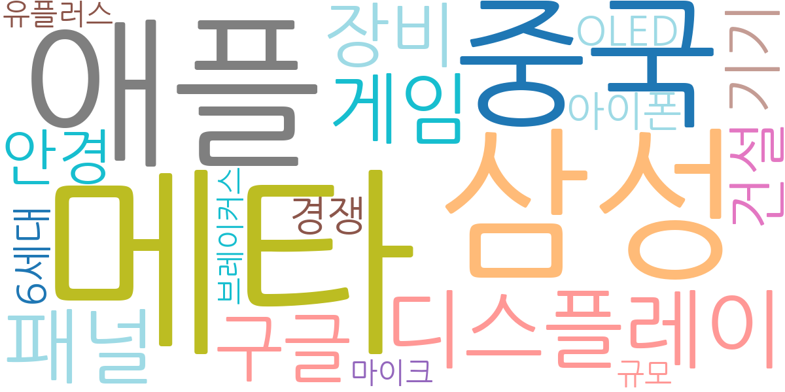
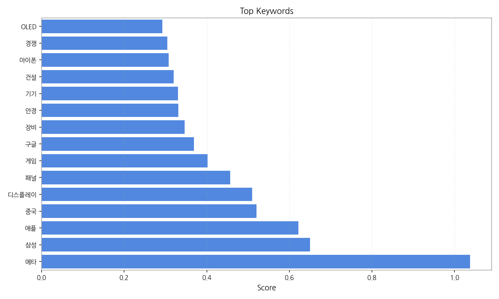
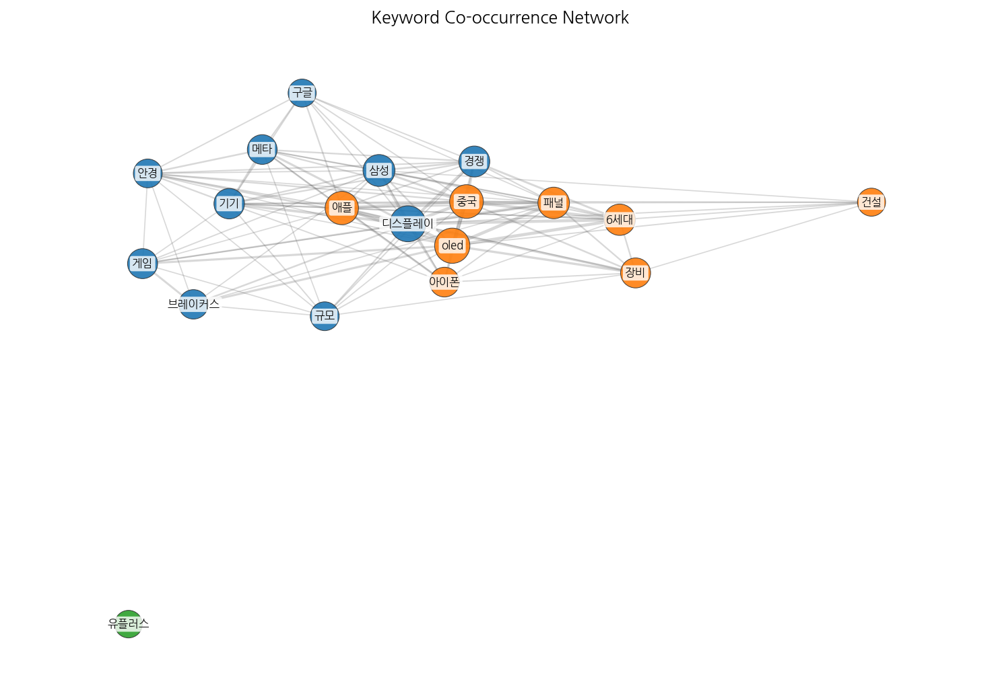
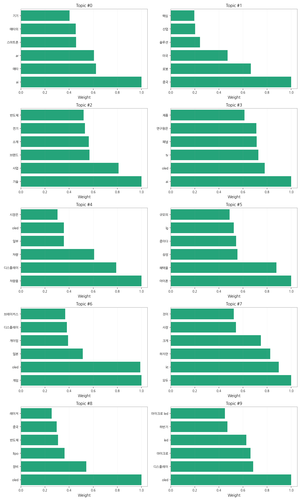
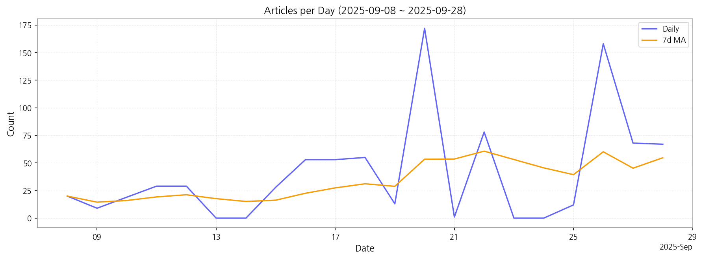

핵심 맥락:
최근 변화/스파이크:
실무 인사이트:

| Rank | Keyword | Score |
|---|---|---|
| 1 | 메타 | 1.038 |
| 2 | 삼성 | 0.650 |
| 3 | 애플 | 0.622 |
| 4 | 중국 | 0.520 |
| 5 | 디스플레이 | 0.510 |
| 6 | 패널 | 0.457 |
| 7 | 게임 | 0.402 |
| 8 | 구글 | 0.369 |
| 9 | 장비 | 0.346 |
| 10 | 안경 | 0.331 |
| 11 | 기기 | 0.330 |
| 12 | 건설 | 0.320 |
| 13 | 아이폰 | 0.308 |
| 14 | 경쟁 | 0.304 |
| 15 | OLED | 0.292 |




핵심 맥락:
최근 변화/스파이크:
실무 인사이트:
| Idea | Target | Value Prop | Score |
|---|---|---|---|
| 메타버스 협업용 초고해상도 마이크로디스플레이 | 북미 빅테크 기업 (메타, 마이크로소프트) | 초고해상도 마이크로디스플레이를 통해 현실과 같은 몰입감 있는 메타버스 협업 환경 제공. 넓은 시야각, 낮은 지연 시간, 뛰어난 색 재현율을 통해 장시간 사용에도 눈의 피로감을 최소화. | 4.50 |
| AI 기반 디스플레이 패널 불량 예측 및 공정 최적화 솔루션 | 자사 디스플레이 패널 생산 공장, 국내외 디스플레이 제조사 | AI 기반의 실시간 불량 예측 및 공정 최적화 솔루션을 통해 디스플레이 패널 생산 수율을 획기적으로 향상시키고, 불량 분석 및 대응 시간을 단축하여 생산 비용 절감. | 4.30 |
| 차량용 AR HUD (Head-Up Display) 솔루션 | 글로벌 완성차 OEM (Tier 1 부품사 협력) | 기존 HUD의 한계를 넘어, AI 기반의 실시간 도로 정보, 내비게이션, 안전 경고 등을 AR로 제공하여 운전 안전성과 몰입감 극대화. 넓은 시야각, 고해상도, 사용자 맞춤형 인터페이스 제공. | 4.20 |
| 차세대 QD-LED (Quantum Dot LED) 소재 개발 및 상용화 | 자사 디스플레이 패널 사업부, 글로벌 TV 제조사 | 기존 디스플레이의 한계를 극복하는 QD-LED 소재를 개발하여 색 재현율, 휘도, 수명, 시야각 등 디스플레이 성능을 획기적으로 향상. 번인 현상 없는 안정적인 디스플레이 구현. | 4.00 |
| IT 기기용 폴더블 OLED 패널 솔루션 | 글로벌 스마트폰 제조사 (삼성전자, 애플) | 내구성, 주름, 두께 문제를 해결한 혁신적인 폴더블 OLED 패널 솔루션 제공. 힌지리스 디자인, UTG 대체 신소재 적용, 초박형 베젤 등을 통해 차별화된 폴더블 기기 경험 제공. | 3.80 |